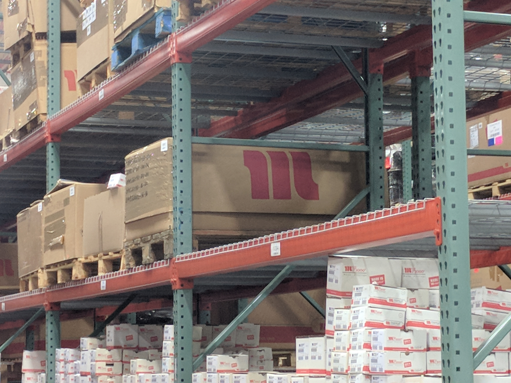

I began my career in supply chain in 2014, working to forecast OEM and aftermarket demands in support hydraulic hose consumers in industries such as oil and gas, open pit and underground mining,aerospace, and more.
Around 2015 I began a transition in my career - from supply chain and order/demand forecasting, into business analysis. Understanding the ERP's our companies worked with, including Profit 21 and Microsoft Navision. In addition, it was my job to interface barcode scanners with those systems where neccessary.
Gradually, I became more systems focused and less supply chain/operations focused. By 2019, as my employeer changed ERP's to Infor's M3 systems, I was one of the lead business analysts on the projects, confirming that the system was a good fit for our comapny, testing setups, and responsible for data migration processes between the old and new systems.

By 2022, I had decided it was time for a change - and in March, I began my current position within Teknor Apex, fully focused on the technical details of the business. These details, all realted to ERP software Infor M3, include all aspects of the software development life cycle:
- Requirements gathering for new modifications to the system
- Specification creatino for developers to follow during programming process
- Test returned modifications to confirm quality assurance. In addition, tests confirm viability for business, operability of program modifications made.
- Train user community on new functionality - through live, in person/zoom style training, or creation of documentation for users to follow as they become accustom to the new functinoality
- Document turnover process to ensure rollback is possilbe in case of failures
Now, I'm teaching myself HTML, CSS, and JS in an attempt to become employable in Germany, with the goal of obtaining an EU blue card. This website was designed as part of that objective, as a demonstration of the process I go through to learn to code, as well as the skills and abilities I'm developing as I continue this process. It was designed completely by myself, without the aid of Wix, Squarespace, or similar software. I'm happy to display/provide the source code to you as demonstration of that fact.